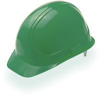

Специальная оценка условий труда (СОУТ) в Казани
Специальная оценка условий труда (СОУТ) – это комплекс мероприятий по выявлению опасных и вредных факторов на производстве. Оценка воздействия на организм сотрудника проводится с помощью инструментальных замеров, по нормативам из Методики проведения специальных условий труда. Данная методика и классификатор опасных и вредных факторов утверждены приказом Министерства труда и социальной защиты РФ № 33н от 24.01.2014 г. СОУТ пришёл на смену аттестации рабочих мест по условиям труда.
Если раньше существовал так называемый «списочный» принцип предоставления компенсаций и гарантий на производствах с вредными/опасными условиями труда, то теперь учитывается исключительно фактическое вредное/опасное воздействие на организм сотрудника на конкретно взятом рабочем месте. Согласно части 1 статьи №426 Федерального закона, организация и оплата мероприятий по оценке условий труда — обязанность работодателя.
В каких случаях СОУТ обязателен
Если профессии, должности и специальности работников предприятия относятся к тем, по которым полагается досрочное назначение трудовой пенсии по старости;
Если профессии, должности и специальности работников предприятия относятся к тем, по которым полагается досрочное назначение трудовой пенсии по старости;
Если профессии, должности и специальности работников предприятия относятся к тем, по которым полагается досрочное назначение трудовой пенсии по старости;
Если профессии, должности и специальности работников предприятия относятся к тем, по которым полагается досрочное назначение трудовой пенсии по старости;
В каких случаях бывает внеплановый СОУТ
- Создание новых рабочих мест на вредных/опасных производствах;
- Замена оборудования, оснастки, техпроцесса, видов сырья, материалов на вредных/опасных производствах;
- Замена средств индивидуальной защиты (СИЗ) на предприятии;
- По предписанию трудинспекции;
- В результате несчастного случая, произошедшего на предприятии;
- При возникновении заболевания у сотрудника/сотрудников, которое возникло из-за последствий вредных/опасных условий труда;
- По требования сотрудников или организаций, представляющих их интересы.
В каких случаях СОУТ не требуется
Если вредные или опасные условия труда на предприятии выявлены не были, то тогда работодатель может подать в территориальную государственную инспекцию труда - декларацию соответствия условий труда государственным нормативным требованиям охраны труда (согласно п.1 ст.11 Федерального закона № 426). Реестр таких деклараций ведёт Федеральная служба по труду и занятости Роструд.
Какие преимущества даёт СОУТ работодателю
-
- Уменьшение страхового тарифа фонда социального страхования;
-
- Упрощение различных процедур, связанных с охраной труда;
-
- Оптимизация выплат компенсаций и гарантий сотрудникам;
-
- Возможность выплачивать рабочим компенсацию, которая не будет облагаться налогом.
Как сократить расходы на СОУТ
Расходы на Специальную оценку условий труда (СОУТ) можно существенно сократить, если есть возможность применять расчёт так называемых «аналогичных» мест, когда на предприятии много рабочих мест с идентичными условиями труда. В таком случае расчёт СОУТ производится для минимум двух, максимум 20% имеющихся рабочих мест, а остальные похожие места признаются «аналогичными».
Что содержится в СОУТ
- - Данные об организации-исполнителе;
-
- Список рабочих мест, где были выявлены опасные или вредные факторы условий труда;
-
- Формы Специальной оценки условий труда с информацией о классе и подклассе условий труда на рабочих местах;
-
- Результаты выполнения исследований и анализа эффективности средств индивидуальной защиты (СИЗ);
-
- Сводная ведомость Специальной оценки условий труда;
-
- Рекомендации по совершенствованию условий труда на предприятии;
-
- Итоговая оценка эксперта компании-исполнителя Специальной оценки условий труда (СОУТ);
- - Возможные возражения членов комиссии;
-
- Подписи членов комиссии, во главе с председателем.
Помощь в разработке Специальной оценки условий труда (СОУТ)
Центр ГОСТСЕРТГРУПП поможет в разработке Специальной оценки условий труда (СОУТ), с учётом всем необходимых нормативов. Разработка документов данного вида требует знания большого количества различных тонкостей производственного и юридического характера. Поэтому во многих случаях организации, которым необходимо разработать СОУТ обращаются к нам, специалистам по данному виду услуг. Мы можем взять на себя полную организацию процесса, и контроль всех этапов.